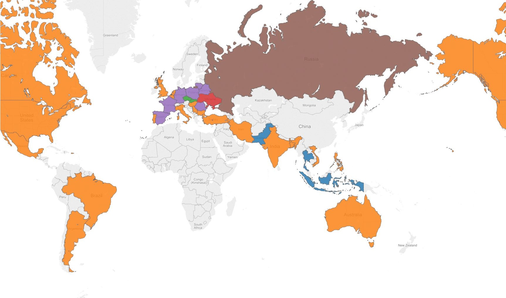

What does a survey reveal about the world of PHP?
The data I've used for this article is from the results of a survey held at sitepoint. The survey asked PHP developers around the world what their favourite PHP framework is at work and for private projects, their age and their country. The survey also asked reasons why they prefer certain frameworks. For me the data about why people choose certain frameworks isn't interesting at this point because the answers differ too wildly to be of use so I filtered this data out. I also in excluded countries with less than fifty votes
The thing that immediately stands out is; China, Africa, Norway, Sweden and Finland, several countries in the Middle-East and Several countries in South America didn't participate enough to show up on the map. For developed countries like China, Sweden, Norway and Finland it's especially weird. I could not however find any data as to why so little people participated. For the other countries it might be due to their level of development.
The second interesting conclusion is that PHP developers over eighteen all favor Laravel over other frameworks, the reasons I found as to why people favor Laravel is that Laravel has lots of documentation, it's modular and it only uses the best parts available for it's functionalities.
There are more findings in the data but sadly it would be getting too much to mention so on to the conclussion!
So my conclussions are that some developed countries don't participate, why they don't participate however I have no idea. It would be very interesting for future research to find out why they don't participate. Secondly Laravel is a clear winner in the world of PHP frameworks because of excellent documentation, great modularity and a high quality of it's functionalities.